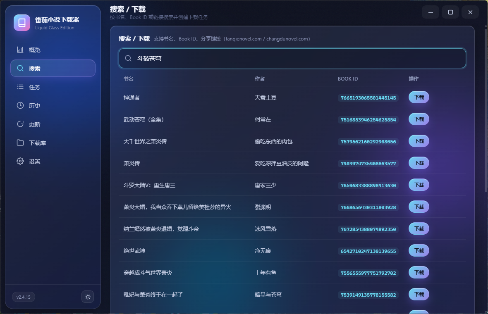
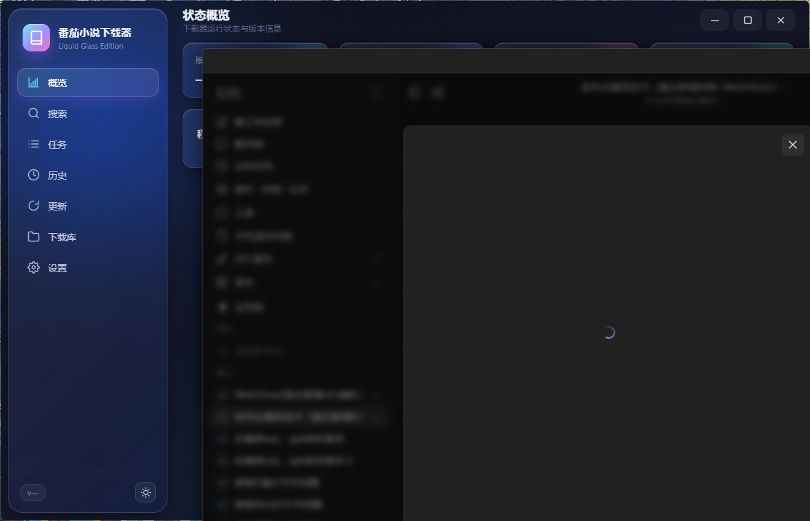
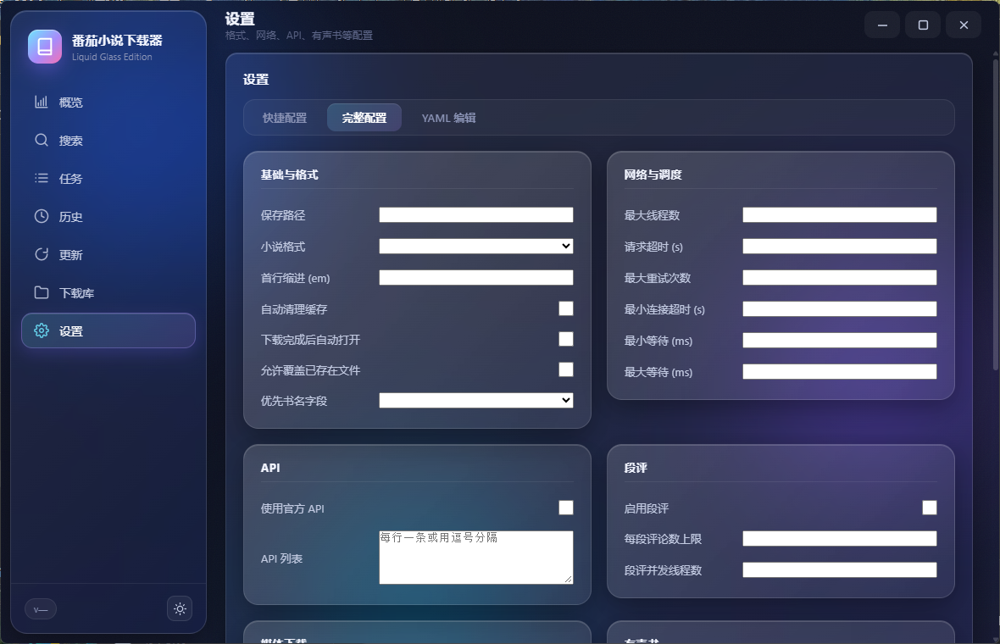

基于 Rust 下载内核的桌面客户端。无边框液态玻璃窗口、极光磨砂质感、WebView2 渲染，搜索 / 下载 / 任务 / 历史 / 更新 / 下载库一应俱全。
深色极光磨砂的窗口与面板、圆角与丙烯酸模糊，把命令行工具变成了真正可用的桌面产品。
无边框窗口 + DWM 丙烯酸模糊 + 圆角，极光渐变背景与磨砂面板，视觉与交互统一。
界面由 WebView2（Edge 内核）渲染，同源本地代理与下载内核通信，无需浏览器与额外配置。
支持书名、Book ID、分享链接（fanqienovel.com / changdunovel.com）搜索，预览章节与格式后一键创建任务。
实时进度轮询、取消 / 重试 / 书名与格式再配置，失败章节一键续传。
扫描本地书目，发现最新章节一键更新；下载历史完整可查。
快捷 / 完整 / YAML 三种配置方式，格式、线程、超时、API、有声书参数自由调。
搜索、概览、设置——同一套液态玻璃设计语言。



原生 C# 壳 + WebView2 前端 + Rust 下载内核，三层各司其职。
C# WinForms 无边框窗口，DWM 丙烯酸模糊、圆角、八向缩放，自动托管内核进程，关闭即回收。
HTML / CSS / JS 渲染液态玻璃 UI，经本地同源代理访问内核 API，无需浏览器。
开源 zhongbai2333/Tomato-Novel-Downloader（v2.4.15）--server 模式，提供全部下载能力。
这个液态玻璃改造与官网，来自一位喜欢把工具做得好看的独立开发者。